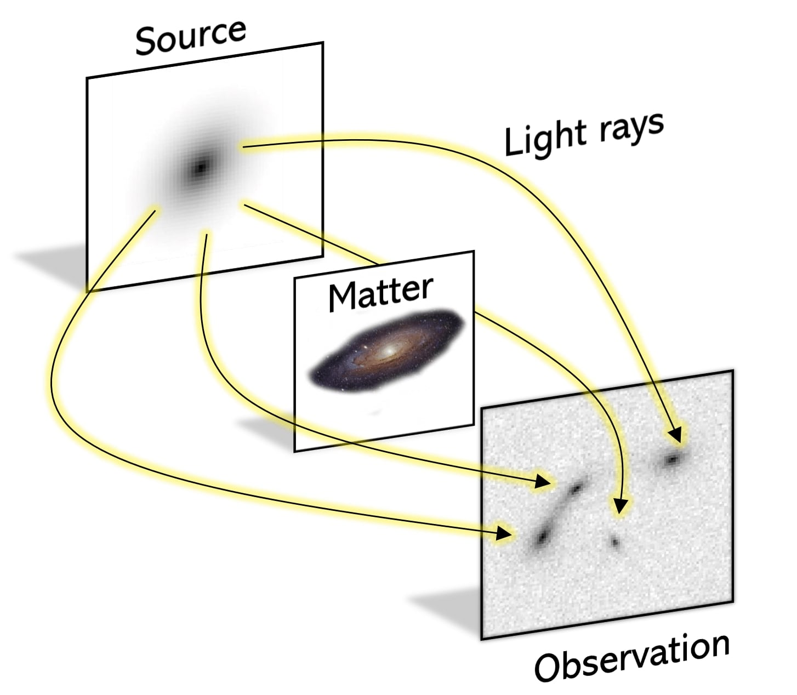
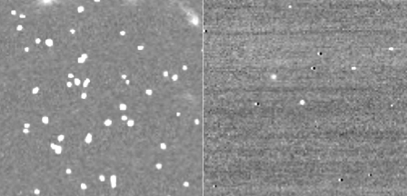
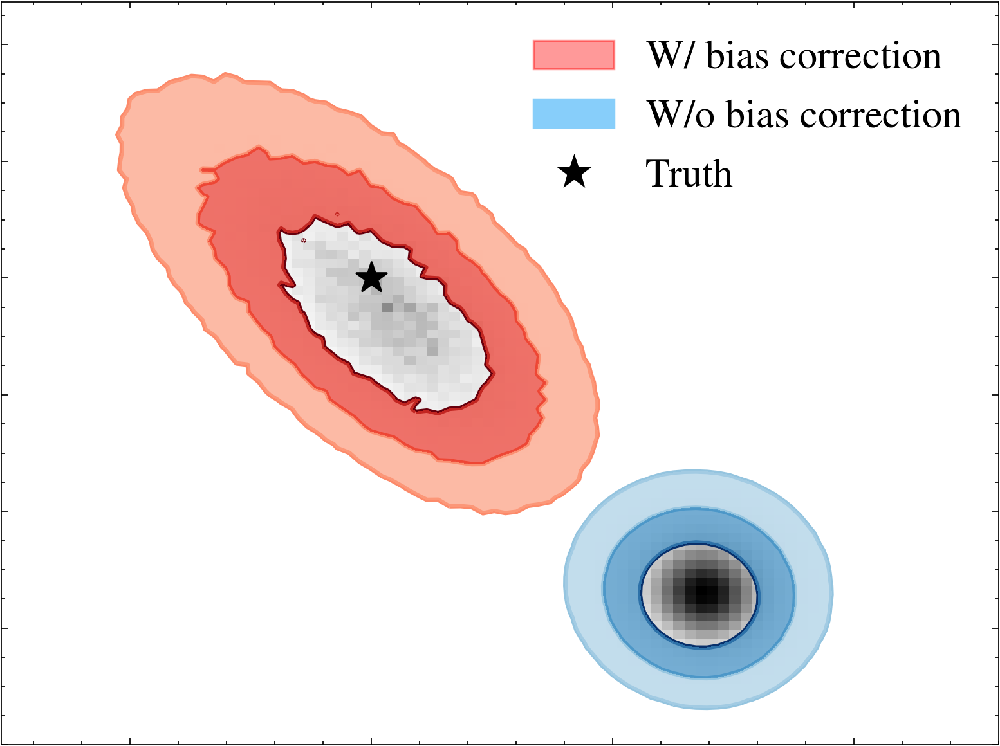
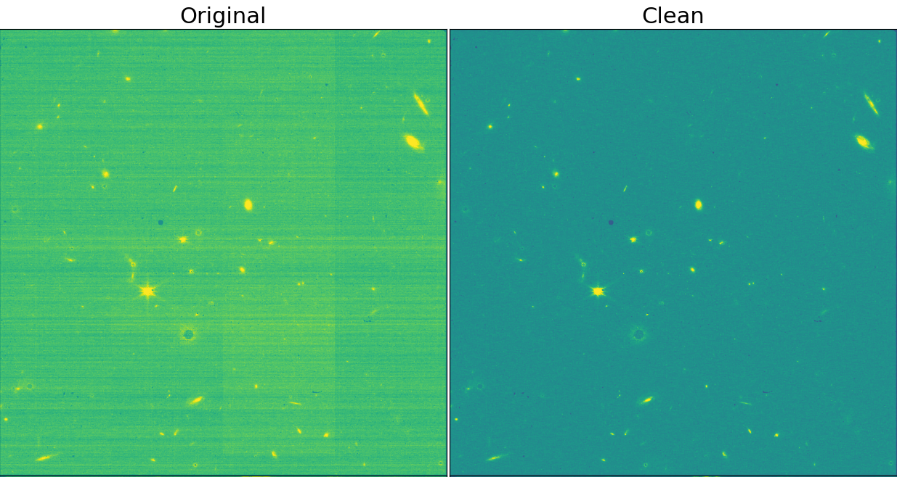
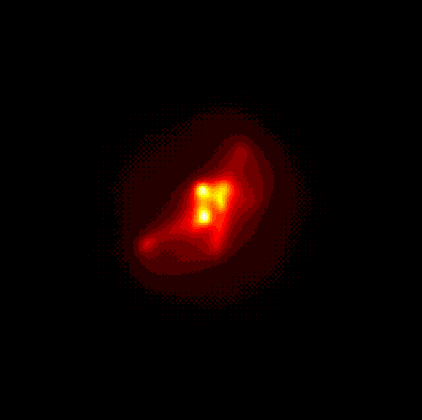
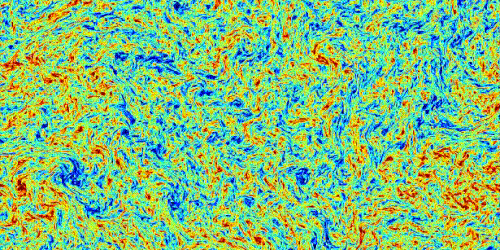

Research
Strong Gravitational Lensing
My main research focuses on combining likelihood-free inference, a method for inferring quantities of interest based on realistic simulations, and machine learning to measure the distribution of dark matter substructure in strong lensing galaxies.
Strong
gravitational lensing is a phenomenon that occurs when light rays from distant galaxies are deflected by the gravity of foreground matter.

These lensing systems can serve as extremely sensitive probes to answer some of the most important questions in cosmology, one of which concerns the distribution of dark matter on the smallest scales of the universe. Because dark matter can interact gravitationally with light, we can detect its effect on strong lensing images and measure its distribution, revealing invaluable information about the physics of the dark matter particle.
Score-based LIkelihood Characterization (SLIC)
This is a recent framework we developed called SLIC in which focuses on performing accurate inference in the general scenario where the noise in the data is highly non-Gaussian. The idea is to learn the gradient of the noise distribution using a score network and when combined with the jacobian of the forward model, we obtain the gradient of the likelihood, which we can then use to sample from the posterior using langevin sampling. We applied our framework to real data from the Hubble Space Telescope (HST) and the James Webb Space Telescope (JWST) and showed that we can perform accurate inference despite the presence of highly non-Gaussian features such as cosmic rays and hot pixels. Our paper can be found here on the arXiv.

Population-Level Inference of Strong Gravitational Lenses
Another of my research goals aims to address the problem of selection bias that occurs when using detectors designed to find strong lensing systems in large sky surveys. The idea is to use a hierarchical inference framework composed of the inference of individual lensing systems in combination with a neural selection correction to estimate accurate population-level statistics of strong lenses. Modeling of selection effects is highly important in order to better position ourselves for population inference based on future sky surveys that are estimated to discover more than 100,000 new strong lensing systems. We wrote a paper with our results linked here here that was accepted at the 2022 International Conference on Machine Learning (ICML).

Removing striped noise from JWST images
One project I've worked on is to use machine learning to remove observational artifacts from JWST images part of the TEMPLATES collaboration. My main focus has been to remove striped 1/f noise from observations by training a neural network with labels of simulated clean images of galaxies. I have posted the code to this on my Github here. The bottom figure shows results from using my neural network on real data, where on the left is the original observation and on the right is the destriped observation.

Amortized inference of strong lensing parameters
One of my projects consists of inferring uncertainties on predictions of strong lensing parameters obtained using convolutional neural networks (CNN). CNNs are extremely efficient at predicting the parameters that describe strong lensing systems. However, they only provide point estimates with no notion of the uncertainty on their predictions. Turning to simulation-based inference, I use density estimation techniques to solve this problem, by learning a likelihood function of the predictions given the true lensing parameters from repeated simulations and sampling from the posterior using Markov Chain Monte Carlo methods (MCMC). This approach is fast and provides accurate posterior distributions of strong lensing parameters, which makes it suitable for the high number of strong lensing systems expected to be discovered in upcoming surveys. I wrote a paper about this back in October 2021 that was accepted for poster presentation at NeurIPS 2021. My paper can be found here on the arXiv. I also presented this work at the LFIParis 2022 conference for which a recording of my talk can be found here.
Probabilistic models for background source reconstruction
Although the main lens deflector can often be described accurately by simple analytic models, the background light source can have a much more complex morphology. For this reason, background sources are sometimes discretized as a grid of pixels in image space to allow for more flexible reconstructions. As a consequence, this turns it into a very high dimensional problem, and when using traditional modeling techniques, strong assumptions are used to make the inference of its posterior distribution tractable (Gaussian prior distribution on the source), which can be inadequate in some cases. One of the projects I've worked on is to instead use machine learning to model the uncertainty of reconstructed image data and to use this to infer the posterior on strong lensing background sources.


Turbulence
Machine learning the Subgrid Stress Tensor

I also work on general applications of machine learning to turbulence simulations such as using machine learning to learn the subgrid physics of turbulence. A common challenge in hydrodynamical simulations that model turbulence is that they are very computationally expensive. This limits the simulation in resolution, for which the smaller scales of the fluid cannot be resolved. However, because the large scale behavior of turbulence is strongly correlated with the smallest scales, this results in inaccurate simulations. The goal of this project is to use machine learning to model the subgrid scale physics of turbulence and use it as a correction for low resolution simulations.